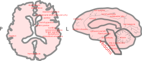
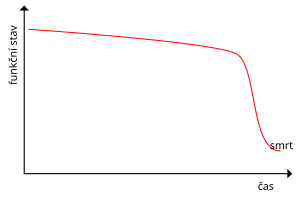
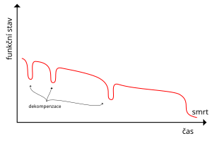
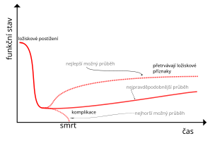
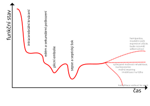
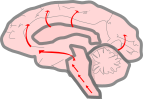
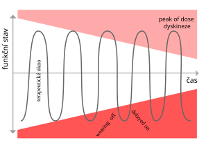
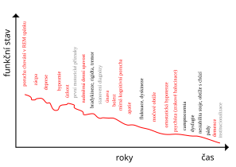

Neurologická klinika 1. LF UK a VFN
Klinika paliativní medicíny 1. LF UK a VFN
www.github.com/PavelDusek/NePal/
Creative Commons Attribution Share Alike 4.0 International (CC-BY-SA)

Difuzní příznaky: poruchy paměti, exekutivní dysfunkce, apraxie, behaviorální a psychiatrické příznaky, poruchy vědomí
Extrapyramidové poruchy hybnosti: akineze/hypokineze, rigidita, dystonie, třes, chorea/atetóza/balismus, myoklonus




| Prognostikace | Kapacita k rozhodování Zástupné rozhodování Informační potřeby zpracování emocí |
| Terapeutický pokus? | Orientace v nemoci Prognostické uvědomění Terapeutické očekávání |
| Individuální prognóza | Životní hodnoty a preference (v kontextu nemoci) |



| Instrument | Princip | Délka administrace |
|---|---|---|
| MacCAT-T | rozhodování, porozumění, zhodnocení, rozum | 10–15 minut |
| CCTI | rozhodování, porozumění, zhodnocení, rozum | 20–25 minut |
| HCAT | porozumění | 10 minut |
| ACE | rozhodování, porozumění, zhodnocení | 15 minut |
| C | Choose and communicate | Can the patient communicate a choice? |
| U | Understand | Does the patient understand the risks, benefits, alternatives, and consequences of the decision? |
| R | Reason | Is the patient able to reason and provide logical explanations for the decision? |
| V | Value | Is the decision in accordance with the patients value system? |
| E | Emergency | Is there a serious and imminent risk to the patient's well-being? |
| S | Surrogate | Is there a surrogate decision-maker available? |
Časné zjištění hodnot, dříve vyslovené přání, osoba blízká dle pacienta, či dle zákona.